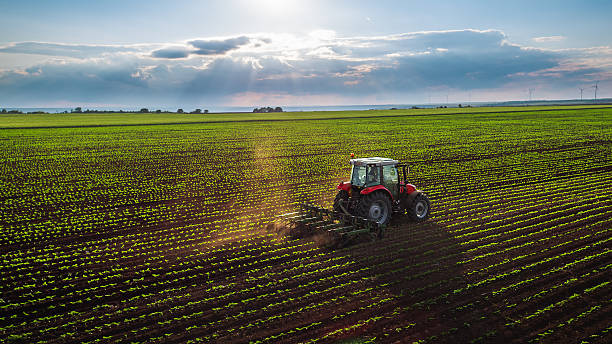

O Agrinho e o Futuro
O Agrinho é um programa que conecta o campo à cidade, promovendo o desenvolvimento sustentável e a geração de oportunidades para todos. Através de ações inovadoras, o programa busca fortalecer a agricultura familiar, incentivar a produção de alimentos saudáveis e promover a inclusão social.
Junte-se a nós nesta jornada de transformação! Participe do Agrinho 2024 e faça parte da construção de um futuro mais verde e próspero.
Saiba MaisNossas Ações
- Incentivo à produção de alimentos orgânicos
- Apoio à agricultura familiar
- Promoção da educação ambiental
- Criação de oportunidades de negócios
Impacto Social
O Agrinho tem um impacto positivo direto na vida de milhares de pessoas, contribuindo para:
- Melhoria da qualidade de vida no campo
- Acesso a alimentos saudáveis na cidade
- Geração de empregos e renda
- Preservação do meio ambiente